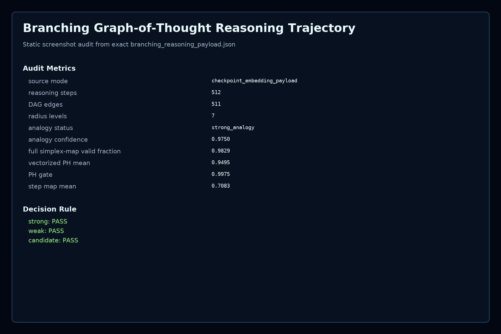
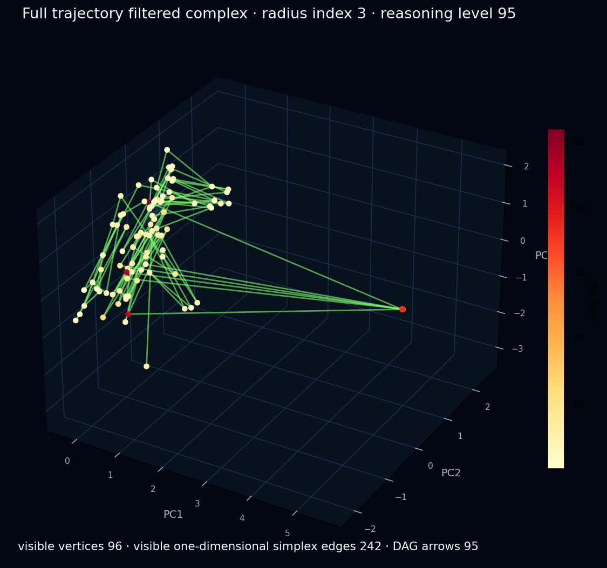
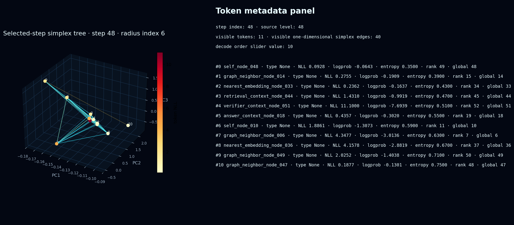
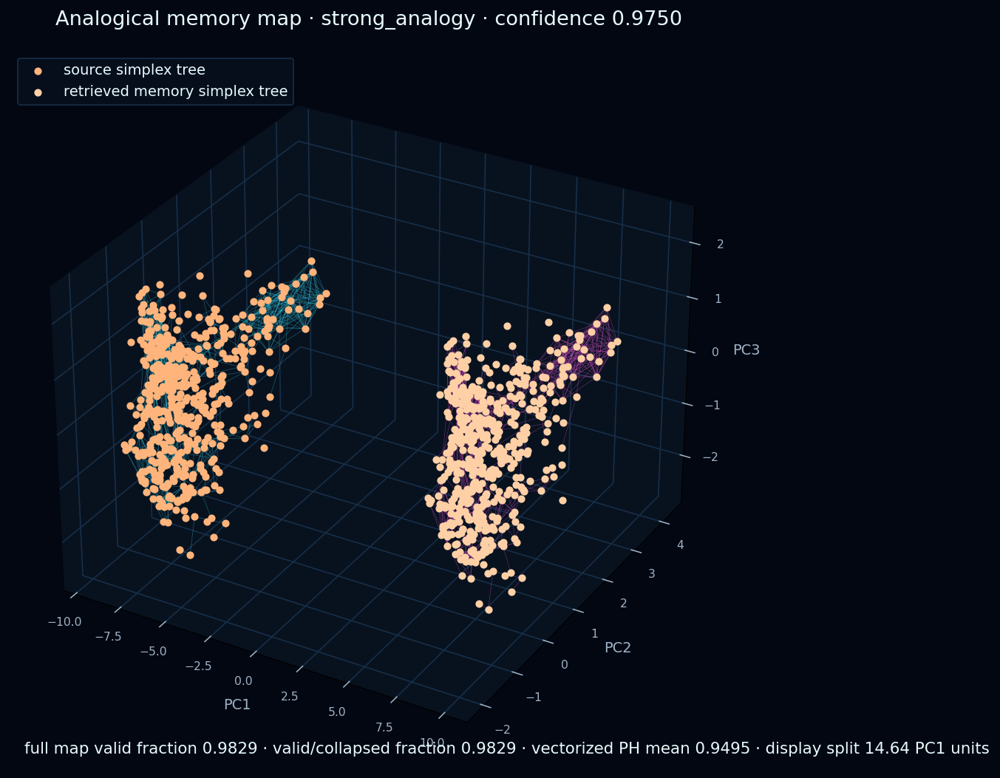
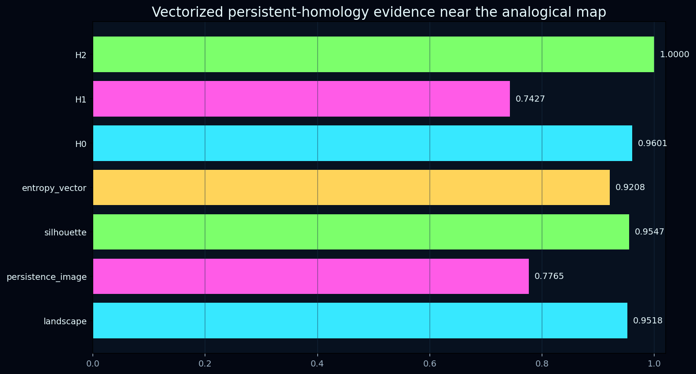

Branching Reasoning Trajectory Report
This is the low-resource public entry point for the graph-of-thought simplex trajectory. It keeps the exact summary metrics and visual evidence while avoiding the large browser-side payload that can freeze older machines.
Static screenshot auditContact sheetManifest
{kind=link}
The heavyweight Plotly/WebGL artifact is not the default GitHub Pages payload. This page restores the core interactions with compact native Canvas/SVG views so it can load on low-resource machines while keeping the exact metrics and screenshots.
Exact Summary Metrics
| source mode | checkpoint_embedding_payload |
|---|---|
| reasoning steps | 512 |
| DAG edges | 511 |
| radius levels | 7 |
| analogy emitted | True |
| analogy status | strong_analogy |
| analogy confidence | 0.975 |
| full simplex-map valid fraction | 0.9829 |
| vectorized PH cosine mean | 0.9495 |
| vectorized PH gate score | 0.9975 |
| step simplex-map mean | 0.7083 |
Interactive Native 3D PCA Trajectory
This viewer restores rotation, pitch, zoom, reasoning-level filtering, radius filtering, one-dimensional simplex edges, and sampled 2-simplices without shipping hidden embeddings or the heavyweight plotting runtime.
Reasoning-Step Filtered Simplicial Complex
Each reasoning step uses its real compact token PCA coordinates from the analysis payload. The radius slider adds one-dimensional simplex edges by distance; the decoding slider reveals token order and decode edges.
Visualizations
{kind=link}

{kind=link}

{kind=link}

{kind=link}

{kind=link}
